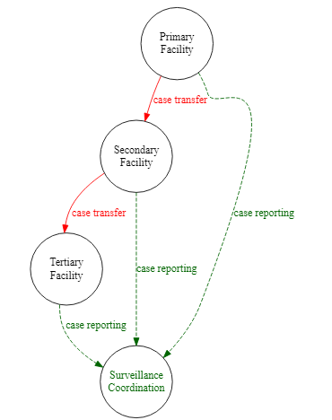

35 Diagrammes et schémas

Cette page passe en revue le code pour produire:
- Des diagrammes de flux en utilisant DiagrammemeR et le langage DOT.
- Diagrammes Alluviaux/Sankey
- Des chronologies d’événements
35.1 Préparation
Chargement des paquets
Ce chunk de code montre le chargement des paquets nécessaires pour les analyses. Dans ce manuel, nous mettons l’accent sur p_load() de pacman, qui installe le paquet si nécessaire et le charge pour l’utiliser. Vous pouvez également charger les paquets installés avec library() de base R. Voir la page sur bases de R pour plus d’informations sur les paquets bases de R.
pacman::p_load(
DiagrammeR, # pour les diagrammes de flux
networkD3, # pour les diagrammes alluviaux/Sankey
tidyverse) # gestion et visualisation des donnéesImporter des données
La plupart du contenu de cette page ne nécessite pas de jeu de données. Cependant, dans la section sur le diagramme de Sankey, nous utiliserons la liste de cas d’une simulation d’épidémie d’Ebola. Si vous souhaitez suivre cette partie, cliquez pour télécharger la liste de cas “propre” (en fichier format .rds). Importez les données avec la fonction import() du paquet rio (elle gère de nombreux types de fichiers comme .xlsx, .csv, .rds - voir la page Importation et exportation pour plus de détails).
# Importez la liste de cas
linelist <- import("linelist_cleaned.rds")Les 50 premières lignes de la linelist sont affichées ci-dessous.
35.2 Diagrammes de flux
On peut utiliser le paquet R DiagrammeR pour créer des diagrammes/schémas de flux. Ils peuvent être statiques, ou s’ajuster dynamiquement en fonction des changements dans un ensemble de données.
Outils
La fonction grViz() est utilisée pour créer un diagramme “Graphviz”. Cette fonction accepte une chaîne de caractères en entrée contenant les instructions pour réaliser le diagramme. Dans cette chaîne de caractères, les instructions sont écrites dans un langage différent, DOT; il est assez facile d’apprendre les bases de le langage DOT.
Structure de base
- Ouvrez les instructions
grViz("
- Spécifiez la direction et le nom du graphique, et ouvrez les parenthèses, par exemple
digraph mon_diagramme_de_flux { - Déclaration du graphique (disposition, direction du rang)
- Déclaration des noeuds (crée les noeuds)
- Déclarations de contours/bords (donne les liens entre les noeuds)
- Fermer les instructions
}")
Exemples simples
Vous trouverez ci-dessous deux exemples simples
Un exemple très minimal :
## Un tracé minimal
DiagrammeR::grViz("digraph {
graph[layout = dot, rankdir = LR]
a
b
c
a -> b -> c
}")Un exemple avec un contexte de santé publique un peu plus appliqué :
# Toutes les instructions se trouvent dans une grande chaîne de caractères
# 'digraph' signifie 'graphique directionnel', puis le nom du graphique
# déclaration du graphique, déclaration des noueds, forme et largeur de noueds, noms des noeuds, bords ou contours
#######
#################
grViz("
digraph surveillance_diagram {
graph [layout = dot,
rankdir = TB,
overlap = true,
fontsize = 10]
node [shape = circle,
fixedsize = true
width = 1.3]
Primary
Secondary
Tertiary
Primary -> Secondary [label = ' transfert de cas']
Secondary -> Tertiary [label = ' transfert de cas']
}
")Syntaxe
Syntaxe de base
Les noms de nouds, ou les déclarations de bords, peuvent être séparés par des espaces, des points-virgules ou des nouvelles lignes.
Direction du rang
Un graphique peut être réorienté pour se déplacer de gauche à droite en ajustant l’argument rankdir dans la déclaration du graphique. Le défaut est TB (top-to-bottom; de haut en bas), mais il peut être LR (left-to-right, gauche-à-droite), ou l’inverse
(RL,BT).
Noms de nouds
Les noms de noeuds peuvent être des mots simples, comme dans l’exemple ci-dessus. Pour utiliser des noms de plusieurs mots ou des caractères spéciaux (par exemple, parenthèses, tirets), placez le nom du noud entre guillemets simples (’ ’). Il peut être plus facile d’avoir un nom de nœud court et d’attribuer un label, comme indiqué ci-dessous entre crochets [ ]. Si vous voulez avoir une nouvelle ligne dans le nom du nœud, vous devez le faire via une étiquette. Utilisez \n dans l’étiquette du nœud entre guillemets simples, comme indiqué ci-dessous.
Sous-groupes
Dans les déclarations des bords/contours, des sous-groupes peuvent être créés de chaque côté de le bords avec des crochets ({ }). Le bord s’applique alors à tous les nouds entre crochets. Ceci est un raccourci.
Mise en page
- dot (définir
rankdircomme soit TB, LR, RL, ou BT) - neato
- twopi
- circo
Noeuds - attributs modifiables
-
label(texte, entre guillemets simples si plusieurs mots)
-
fillcolor(plusieurs couleurs possibles)
-
fontcolor
-
alpha(transparence 0-1)
-
shape(ellipse, ovale, diamant, ouf, texte en clair, point, carré, triangle)
-
style
-
sides
-
peripheries
-
fixedsize(h x l)
-
height
-
width
-
distortion
-
penwidth(largeur de la bordure de la forme)
-
x(déplacement gauche/droite)
-
y(déplacement haut/bas)
-
fontname
-
fontsize
icon
Bords - attributs modifiables
-
arrowsize
-
arrowhead(normal, box, crow, curve, diamond, dot, inv, none, tee, vee)
-
arrowtail
-
dir(direction, )
-
style(pointillé, …)
-
color
-
alpha
-
headport(texte devant la tête de la flèche)
-
tailport(texte situé derrière la queue de flèche)
-
fontname
-
fontsize
-
fontcolor(couleur de la police)
-
penwidth(largeur de la flèche)
-
minlen(longueur minimale)
Noms de couleurs : valeurs hexadécimales ou noms de couleurs ‘X11’, voir ici pour les détails sur X11
Exemples complexes
L’exemple ci-dessous développe le diagramme de surveillance, en ajoutant des noms de noeuds complexes, des bords groupées, des couleurs et un style spécifique.
# Toutes les instructions se trouvent dans une grande chaîne de caractères
# 'digraph' signifie 'graphique directionnel', puis le nom du graphique
# déclaration du graphique
# disposition de haut en bas
#################
# nouds (formes cercles)
#################
#bords et bord groupé
DiagrammeR::grViz("
digraph surveillance_diagram {
graph [layout = dot,
rankdir = TB,
fontsize = 10]
node [shape = circle,
fixedsize = true
width = 1.3]
Primary [label = 'Site Primaire']
Secondary [label = 'Site Secondaire']
Tertiary [label = 'Site Tertiaire']
SC [label = 'Coordination de\nla Surveillance',
fontcolor = darkgreen]
Primary -> Secondary [label = 'Transfert de cas',
fontcolor = red,
color = red]
Secondary -> Tertiary [label = 'Transfert de cas',
fontcolor = red,
color = red]
{Primary Secondary Tertiary} -> SC [label = 'déclaration des cas',
fontcolor = darkgreen,
couleur = darkgreen,
style = dashed]
}
")Groupements de sous-graphiques
Pour regrouper les noeuds dans des clusters encadrés, placez-les dans le même sous-graphique nommé (subgraph name {}). Pour que chaque sous-graphe soit identifié dans une boîte de délimitation, commencez le nom du sous-graphique par “cluster”, comme le montrent les 4 boîtes ci-dessous.
DiagrammeR::grViz(" # All instructions are within a large character string
digraph surveillance_diagram { # 'digraph' means 'directional graph', then the graph name
# graph statement
#################
graph [layout = dot,
rankdir = TB,
overlap = true,
fontsize = 10]
# nodes (circles)
#################
node [shape = circle, # shape = circle
fixedsize = true
width = 1.3] # width of circles
subgraph cluster_passive {
Primary [label = 'Site Primaire']
Secondary [label = 'Site Secondaire']
Tertiary [label = 'Site Tertiaire']
SC [label = 'Coordination de\nla Surveillance',
fontcolor = darkgreen]
}
# nodes (boxes)
###############
node [shape = box, # node shape
fontname = Helvetica] # text font in node
subgraph cluster_active {
Active [label = 'Surveillance\nActive']
HCF_active [label = 'HCF\nRecherche Active']
}
subgraph cluster_EBD {
EBS [label = 'Surveillance basée sur\n les événements (SBE)']
'Social Media'
Radio
}
subgraph cluster_CBS {
CBS [label = 'Surveillance basée sur\n les communautés(SBC)']
RECOs
}
# edges
#######
{Primary Secondary Tertiary} -> SC [label = 'déclaration des cas']
Primary -> Secondary [label = 'transfert de cas',
fontcolor = red]
Secondary -> Tertiary [label = 'transfert de cas',
fontcolor = red]
HCF_active -> Active
{'Social Media' Radio} -> EBS
RECOs -> CBS
}
")Formes des nouds
L’exemple ci-dessous, emprunté à ce tutoriel, montre les formes de nouds appliquées et une abréviation pour les connexions de bords en série.
# définir les styles globaux des noeuds. Nous pouvons les remplacer dans la boîte si nous le souhaitons.
# définitions des bords avec les ID des nouds
DiagrammeR::grViz("digraph {
graph [layout = dot, rankdir = LR]
node [shape = rectangle, style = filled, fillcolor = Linen]
data1 [label = 'Dataframe 1', shape = folder, fillcolor = Beige]
data2 [label = 'Dataframe 2', shape = folder, fillcolor = Beige]
process [label = 'Process \n Data']
statistical [label = 'Analyse\nStatistique']
results [label= 'Résultats']
{data1 data2} -> process -> statistical -> results
}")Sorties
Comment gérer et sauvegarder les sorties
- Les résultats apparaîtront dans le volet de visualisation de RStudio, par défaut dans le coin inférieur droit, à côté de Files, Plots, Packages et Help.
- Pour exporter, vous pouvez “Enregistrer en tant qu’image” ou “Copier a le presse-papiers” à partir de la Viewer. Le graphique s’ajustera à la taille spécifiée.
Figures paramétrées
Voici une citation de ce tutoriel : https://mikeyharper.uk/flowcharts-in-r-using-diagrammer/
“Figures paramétrées : L’un des grands avantages de la conception de figures dans R est que nous sommes en mesure de connecter les figures directement à notre analyse en lisant les valeurs R directement dans nos schemas de flux. Par exemple, supposons que vous ayez créé un processus de filtrage qui supprime les valeurs après chaque étape d’un processus, vous pouvez avoir une figure montrant le nombre de valeurs restantes dans l’ensemble de données après chaque étape de votre processus. Pour ce faire, vous pouvez utiliser le symbole @@X directement dans la figure, puis y faire référence dans le pied de page du graphique en utilisant [X] :, où X est un indice numérique unique.”
Nous vous encourageons à revoir ce tutoriel si le paramétrage est quelque chose qui vous intéresse.
35.3 Diagrammes Alluvial/Sankey
Chargement des paquets
Ce morceau de code montre le chargement des paquets nécessaires aux analyses. Dans ce manuel, nous mettons l’accent sur p_load() de pacman, qui installe le paquet si nécessaire et le charge pour l’utiliser. Vous pouvez également charger les paquets installés avec library() de base R. Voir la page sur bases de R pour plus d’informations sur les paquets R.
Nous chargeons le paquet networkD3 pour produire le diagramme, et aussi tidyverse pour les étapes de préparation des données.
pacman::p_load(
networkD3,
tidyverse)Graphique à partir d’un ensemble de données
Tracer les connexions dans un jeu de données. Nous démontrons ci-dessous l’utilisation de le package networkD3 sur le cas linelist. Voici un tutoriel en ligne.
Nous commençons par obtenir le nombre de cas pour chaque combinaison unique de catégorie d’âge et d’hôpital. Pour plus de clarté, nous avons supprimé les valeurs dont la catégorie d’âge est manquante. Nous renommons également les colonnes hospital et age_cat en source et target respectivement. Ce seront les deux côtés du diagramme alluvial.
# comptes par hôpital et par catégorie d'âge
links <- linelist %>%
drop_na(age_cat) %>%
select(hospital, age_cat) %>%
count(hospital, age_cat) %>%
rename(source = hospital,
target = age_cat)L’ensemble de données ressemble maintenant à ceci :
Maintenant, nous créons un jeu de données de tous les noeuds du diagramme, sous la colonne name. Il s’agit de toutes les valeurs de hospital et age_cat. Notez que nous nous assurons qu’elles sont toutes de classe caractères avant de les combiner, et ajustons les colonnes ID pour qu’elles soient des numeros au lieu d’étiquettes :
# Les noms uniques des noeuds
nodes <- data.frame(
name=c(as.character(links$source), as.character(links$target)) %>%
unique()
)
nodes # imprimer## name
## 1 Central Hospital
## 2 Military Hospital
## 3 Missing
## 4 Other
## 5 Port Hospital
## 6 St. Mark's Maternity Hospital (SMMH)
## 7 0-4
## 8 5-9
## 9 10-14
## 10 15-19
## 11 20-29
## 12 30-49
## 13 50-69
## 14 70+Nous éditons le cadre de données links, que nous avons créé ci-dessus avec count(). Nous ajoutons deux colonnes numériques, IDsource et IDtarget, qui reflèteront/créeront réellement les liens entre les noeuds. Ces colonnes contiendront les numéros numéros de rangs (position) des noeuds de source et de target. On soustrait 1 pour que ces numéros de position commencent à 0 (et pas à 1).
# correspond aux nombres, pas aux noms
links$IDsource <- match(links$source, nodes$name)-1
links$IDtarget <- match(links$target, nodes$name)-1Le jeu de données des liens ressemble maintenant à ceci :
Tracez maintenant le diagramme de Sankey avec sankeyNetwork(). Vous pouvez en savoir plus sur chaque argument en exécutant ?sankeyNetwork dans la console. Notez que si vous ne définissiez pas iterations = 0, l’ordre de vos noeuds ne serait pas celui attendu.
# graphique
######
p <- sankeyNetwork(
Links = links,
Nodes = nodes,
Source = "IDsource",
Target = "IDtarget",
Value = "n",
NodeID = "name",
units = "TWh",
fontSize = 12,
nodeWidth = 30,
iterations = 0) # Assurez-vous que l'ordre des noeuds est celui des données.
pVoici un exemple où le résultat du patient est également inclus. Notez que dans l’étape de préparation des données, nous devons calculer le nombre de cas entre l’âge et l’hôpital, et séparément entre l’hôpital et le résultat - puis lier tous ces comptes ensemble avec bind_rows().
# Nombre de cas par hôpital et par catégorie d'âge
age_hosp_links <- linelist %>%
drop_na(age_cat) %>%
select(hospital, age_cat) %>%
count(hospital, age_cat) %>%
rename(source = age_cat,
target = hospital)
hosp_out_links <- linelist %>%
drop_na(age_cat) %>%
select(hospital, outcome) %>%
count(hospital, outcome) %>%
rename(source = hospital,
target = outcome)
# combiner les liens
links <- bind_rows(age_hosp_links, hosp_out_links)
# Les noms uniques des noeuds
nodes <- data.frame(
name=c(as.character(links$source), as.character(links$target)) %>%
unique()
)
# Créer des numéros d'identification
links$IDsource <- match(links$source, nodes$name)-1
links$IDtarget <- match(links$target, nodes$name)-1
# graphique
######
p <- sankeyNetwork(Links = links,
Nodes = nodes,
Source = "IDsource",
Target = "IDtarget",
Value = "n",
NodeID = "name",
units = "TWh",
fontSize = 12,
nodeWidth = 30,
iterations = 0)
p35.4 Chronologie des événements
Pour faire une timeline montrant des événements spécifiques, vous pouvez utiliser le paquet vistime.
Voir cette vignette
# charger le paquet
pacman::p_load(vistime, # créer la ligne de temps
plotly # pour la visualisation interactive
)Voici l’ensemble de données d’événements avec lequel nous commençons :
p <- vistime(data) # appliquer vistime
library(plotly)
# étape 1 : transformation en liste
pp <- plotly_build(p)
# étape 2 : taille des marqueurs
for(i in 1:length(pp$x$data)){
if(pp$x$data[[i]]$mode == "markers") pp$x$data[[i]]$marker$size <- 10
}
# étape 3 : taille du texte
for(i in 1:length(pp$x$data)){
if(pp$x$data[[i]]$mode == "text") pp$x$data[[i]]$textfont$size <- 10
}
# étape 4 : position du texte
for(i in 1:length(pp$x$data)){
if(pp$x$data[[i]]$mode == "text") pp$x$data[[i]]$textposition <- "right"
}
#imprimer
pp35.5 DAGs
Vous pouvez construire un DAG manuellement en utilisant le paquet DiagammeR et le langage DOT comme décrit ci-dessus.
Alternativement, il existe des paquets comme ggdag et daggity.
35.6 Ressources
Une grande partie de ce qui précède concernant le langage DOT est adaptée du tutoriel sur ce site.
Un autre tutoriel sur DiagammeR plus approfondi.
Ici, un page sur les diagrammes de Sankey.